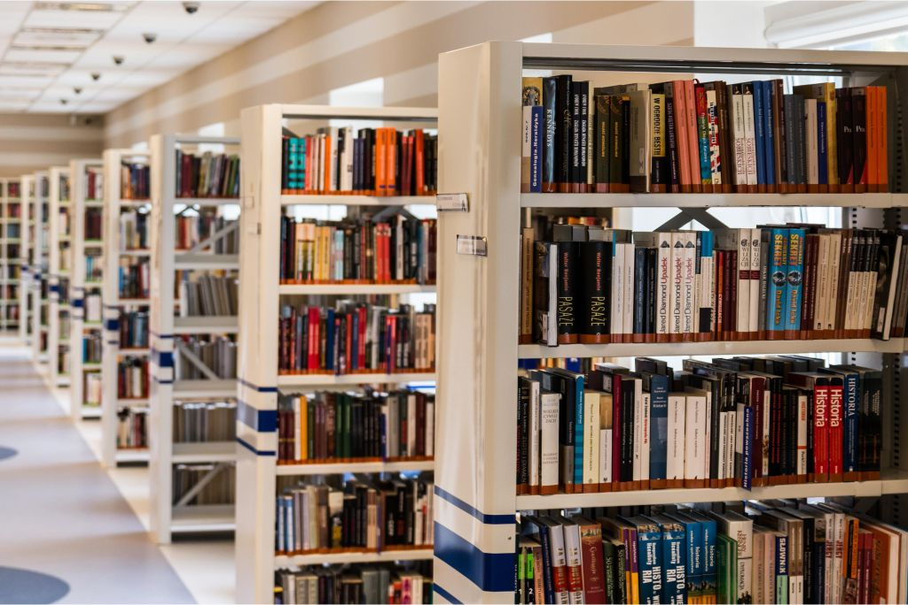

Sobre nós
Bem-vindo à World Book, um espaço dedicado ao conhecimento, à imaginação e à descoberta! Nossa biblioteca nasceu da paixão pelos livros e pela leitura, com o objetivo de fomentar o amor pela literatura em todas as suas formas.
Na World Book, acreditamos que cada livro é uma porta aberta para novos mundos, ideias e experiências. Oferecemos um acervo diversificado que abrange desde clássicos da literatura mundial até as mais recentes publicações, incluindo ficção, não-ficção, ciência, arte e muito mais. Nossa missão é proporcionar um ambiente acolhedor e inspirador, onde leitores de todas as idades possam explorar, aprender e se conectar com o universo dos livros.
Além de emprestar livros, promovemos uma variedade de atividades culturais e educacionais, como clubes de leitura, palestras, oficinas e eventos literários. Trabalhamos em parceria com escolas e comunidades para incentivar a leitura e a educação, acreditando que o acesso à literatura é fundamental para o desenvolvimento pessoal e social.
Nossa equipe é formada por apaixonados por literatura, prontos para ajudar você a encontrar o livro perfeito e a descobrir novas histórias. Estamos sempre à disposição para oferecer recomendações e orientações, pois queremos que cada visita à World Book seja uma experiência enriquecedora.
Venha nos visitar e faça parte da nossa comunidade de leitores! Junte-se a nós na celebração do conhecimento e da imaginação. Na World Book, o próximo capítulo da sua história começa aqui!

Voltar